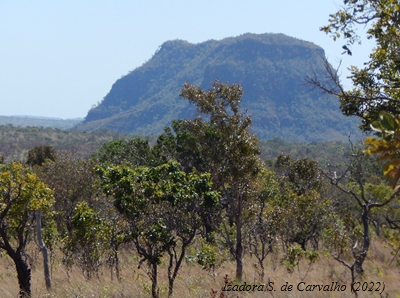

Manual de Mapeamento de Fogo: uma aplicação na gestão de áreas protegidas no cerrado maranhense

Prefácio
O manual de Mapeamento de Fogo em Áreas do Cerrado Maranhense está sendo desenvolvido para registrar os trabalhos de mapeamento realizados em áreas de proteção (Unidades de Conservação e Territórios Indigenas) inseridas no bioma Cerrado. Este manual tem como primeira área destaque na geração de informações e produtos de detecção e mapeamento de queimadas o Parque Nacional da Chapada das Mesas (PNCM), a partir do trabalho desenvolvido por Carvalho e colaboradores (2023). Contudo outras áreas de proteção no estado do Maranhão possuiem trabalhos de mapeamento de fogo em adamento ou prospectados. Portanto esta será uma primeira versão do manual que será atualizado conforme os trabalho forem ocorrendo e colaborações de outros autores forem surgindo.
Muitos produtos de detecção automática de áreas queimadas foram desenvolvidos ao longo do tempo, com o avanço dos sensores e produtos obtidos por sensoriamento remoto. Este manual tem por objetivo, a partir de metodologias que fornecem produtos mais detalhados de informações de histórico de fogo, levando em consideração as características locais de cada área/região mapeada. O Cerrado é caracterizado pela sua heterogeneidade fitofisionomica, portando buscamos divulgar dados em uma escala (espacial/temporal) que contemplem a biodiversidade existente, com enfoque na região do Cerrado maranhense que está localizado ao norte da área do bioma, entre uma região de transição Amazônia-Cerrado-Caatinga.
Agradecimentos
O manual de Mapeamento de Fogo em Áreas do Cerrado Maranhense foi idealizado pelo pesquisador Celso Silva-Júnior a partir dos trabalhos desenvolvidos por Izadora Santos de Carvalho sob orientação da pesquisadora Drª Swanni T. Alvarado da Universidad Nacional de Colombia (UNAL - Bogotá) e do pequisador Dr. Tiago Massi Ferraz da Universidade Estadual do Maranhão (UEMA - São Luís).
Os trabalho divulgados contaram com apoio e financiamento: FAPEMA, CAPES, MapFire, PPGAA, PPGA, UEMA, UEMASUL, LCAB, UNESP (Ecodyn).
E aos pesquisadores que colaboraram direta e indiretamente com os trabalhos apresentados, desde colaboração intelectual à estrutural: Thiago Sana, Carlos Leandro, Daniel Borini, Fabio Afonso, Jose Roberto, Alinne Silva, Caio, Patrick Costa Silva, Leo Leonel, Rayssa, à gestão do PNCM e aos guias e seus familiares que deram suporte ao longo dos trabalhos de campo.
Para colaborar com a elaboração do manual entre em contato: izadorasccs@gmail.com
Este produto foi desenvolvido utilizando Quarto books.